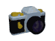
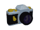

Molly / Jay / Gal
20yrs || NJ || SCAD 2026 Film & Tv


hello, kind stranger! my name is Molly, but you can also call me Gal or Jay. I'm a 20 yr old film student from the NJ pine barrens with a passion for art & animation!
I've had an interest in code for a while and I only recently (as of 2024) decided to actually learn how to code & make my own website. This is something I've been wanting to do for a while, and I think having a cool website to put whatever I want onto can be fun!
I'm a film major & I'm hoping to pursue video and film editing or live broadcasting production in the future! I also have an animation minor and would also love to be a storyboard artist or animator as well. (but DAMN would that be a lot of work)
I draw too! You can see most of my work on Instagram, if you're interested, and you can view my characters & some information about them on my ToyHouse :)